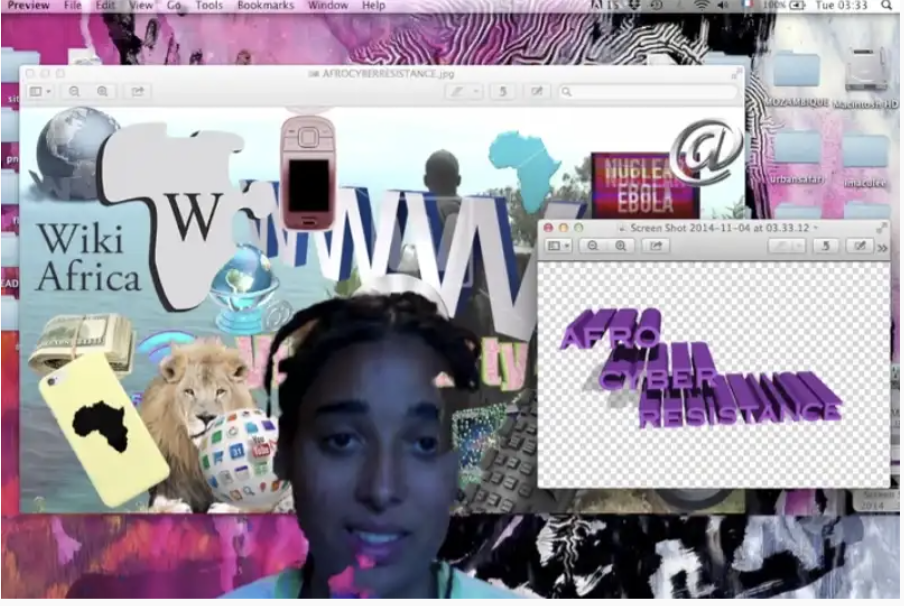
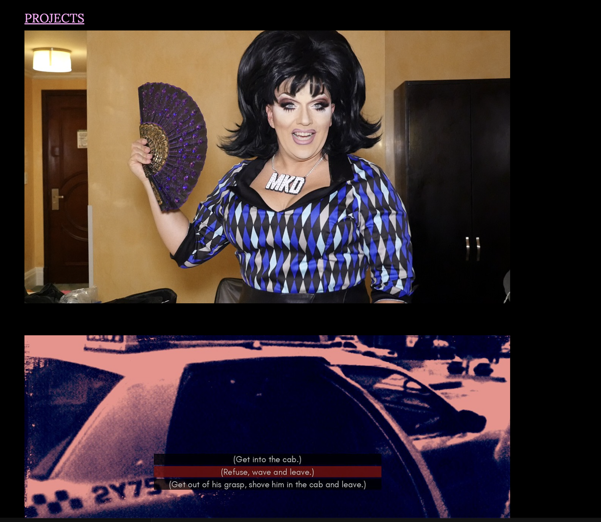
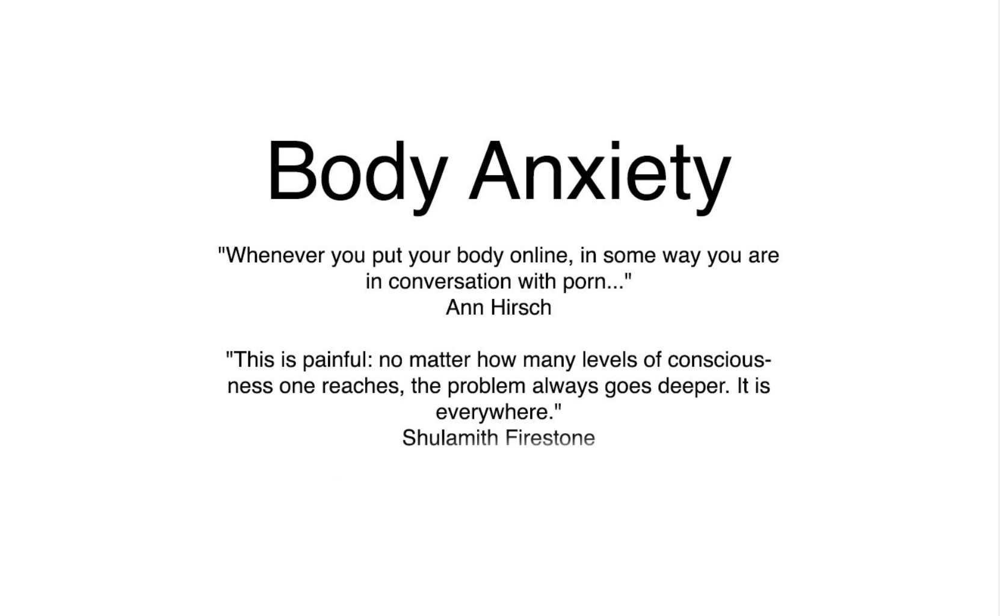

Curatorial Statement
The internet is a space of infinite reinvention, where identities are curated, aesthetics are amplified, and digital expressions of femininity take on new forms. "Glitch & Glitter: A Celebration of Digital Femmes" explores how artists use the web as a medium to construct, deconstruct, and reclaim notions of beauty, identity, and community. The selected works examine hyper-femininity, online personas, and the performative nature of digital spaces. From nostalgic pixel art to distorted selfies and subversive hyperpop aesthetics, this exhibition highlights how net artists reimagine femininity through interactivity, color, and code. Together, these pieces celebrate the internet as a stage for self-expression, resistance, and reinvention.
Afro Cyber Resistance
Artist: Tabita Rezaire
Year: 2014

A bold, politically-charged audiovisual work addressing the legacies of colonialism in technology. Rezaire mixes glitch aesthetics, spiritual motifs, and digital collage to expose the internet's complicity in systemic oppression while reclaiming space for Black femme identities.
View Work
The Council on Gender Sensitivity and Behavioral Awareness in World of Warcraft
Artist: Angela Washko
Year: 2012–2014

A long-term intervention within World of Warcraft in which Washko engages fellow players in dialogue about feminism, gender, and behavior in gaming culture. The work documents moments of confrontation and conversation in a hyper-masculine digital world.
View Work
Body Anxiety
Artists: Various (curated by Jennifer Chan & Leah Schrager)
Year: 2015

An online exhibition of female-identifying artists confronting digital self-representation and body politics. Artists such as Randon Rosenbohm, Leah Schrager, and Faith Holland use gifs, webcam performances, and manipulated imagery to critique the male gaze and celebrate digital autonomy.
View Work